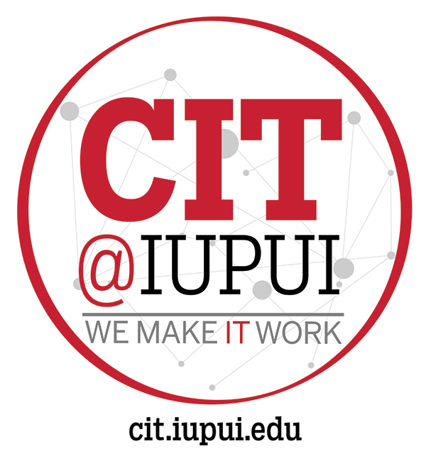

This is a step-by-step review of the process of creating a new Python website that uses Flask for backend functionality. |  |
Follow the instructions below based on your platform.
Google has a very good overview of these instructions.
Open the Terminal on a Mac and then install Homebrew. Homebrew is a package manager for open source software on Mac computers.
/bin/bash -c "$(curl -fsSL https://raw.githubusercontent.com/Homebrew/install/HEAD/install.sh)"If Homebrew is already installed, update it:
brew updateInstall Python:
brew install pythonCreate your virtual environment. Conceptually, you'll want to create a virtual environment for every separate Python project. In the example below, my environment is named 37400_python_api.
python3 -m venv 37400_python_apiStart your virtual environment:
source 37400_python_api/bin/activateYou should see your virtual environment name appear before your command prompt.
First install the latest version of Python for Windows from the Python website.
Create your virtual environment. Conceptually, you'd want to create a virtual environment for every separate Python project. In the example below, my environment is named 37400_python_api.
py -m venv 37400_python_apiStart your virtual environment:
.\env\Scripts\activateYou should see your virtual environment name appear before your command prompt.
With your virtual environment running, update pip - the Python package manager:
pip install --upgrade pipStep 3: Create a Python File
You will create a file that will host a simple Python web site.
First, create a new directory that will hold your website's files and then move into it.
mkdir api
cd apiUsing your favorite code editor, create two files in the api folder:
Add the following code to main.py
from flask import Flask
app = Flask(__name__)
app.config["DEBUG"] = True
@app.route('/', methods=['GET'])
def home():
return "<h1>Sample Python Page</h1><p>This is an HTML page served by Python.</p>"
if __name__ == '__main__':
# This is used when running locally only.
app.run(host='127.0.0.1', port=8080, debug=True)
Add the following code to requirements.txt
Flask==2.0.1From the command line, add the packages listed in requirements.txt to your virtual environment.
pip install -r requirements.txtInstruct Python to run your app.
Mac:
python3 main.pyWindows:
py main.pyYour page is now being served at http://127.0.0.1:8080/ on your local machine.
Step 4: Create a Git Repository
Ensure that Git is installed on your local machine.
Then, run the following series of commands to create a local Git repository.
git init
git add .
git commit -m "Initial Commit"You will also want to create a remote repository and push your local files to it.
A sample remote repository for this application can be found here.
You now have a basic Python / Flask site set up. Go do something cool with it.